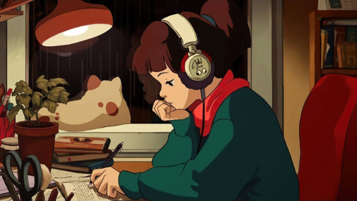

Minha rotina no Suporte da Amazon (DevOps) na Irlanda
Mateus Muller
42 mil visualizações • há 8 dias
42 mil visualizações • há 8 dias
olá, pessoa exausta [depressão, apatia e desabafo]
Ludoviajante
1,3 mi visualizações • há 1 ano
1,3 mi visualizações • há 1 ano

lofi hip hop radio - beats to relax/study to
Lofi Girl
25 mil assistindo • há 3 ano
25 mil assistindo • há 3 ano
4 Tipos de entrevista técnica para programador
Front Beginners
4,9 mil visualizações • há 9 meses
4,9 mil visualizações • há 9 meses

Respondendo suas Perguntas sobre Carreira | via Instagram
Fabio Akita
52 mil visualizações • há 2 ano
52 mil visualizações • há 2 ano
TREINO FINALIZAÇÃO | FABRICIO PACHOLOK
Fabricio Pacholok
9,2 mil visualizações • há 11 meses
9,2 mil visualizações • há 11 meses
O ENIGMA DE OUTRO MUNDO
Renatows
112 mil visualizações • há 3 meses
112 mil visualizações • há 3 meses